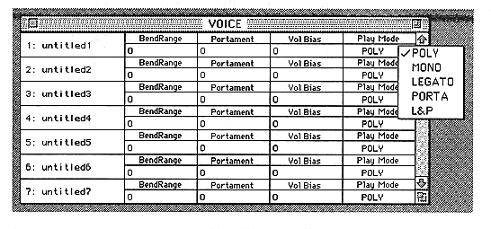
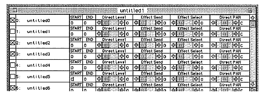

MODE
Displays the play mode.


FM connection carrier check box
When ON, it becomes a base slot. (Multiple cases possible)
This is used in the FM connection window. For details, refer to “■ FM connection window” in 7. Window.